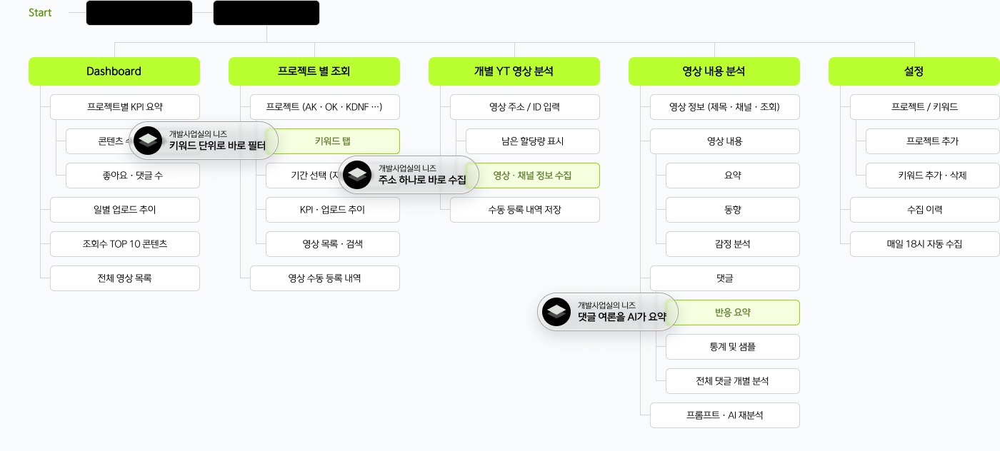
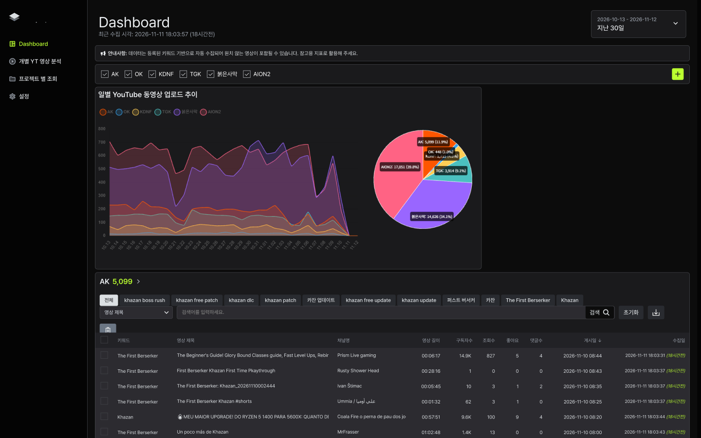
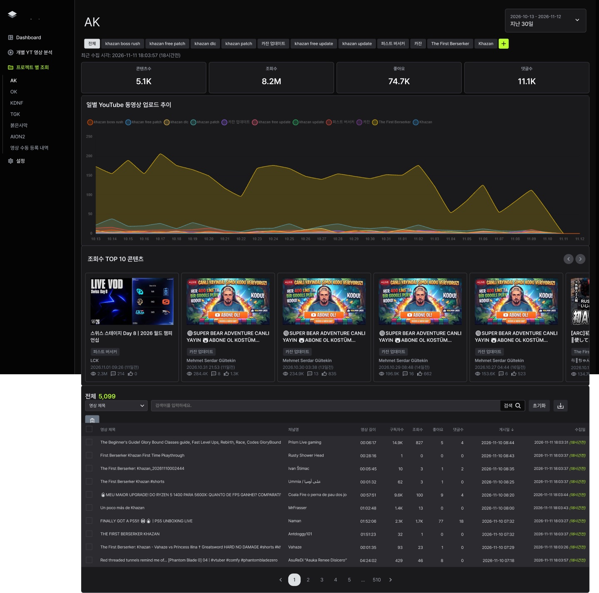
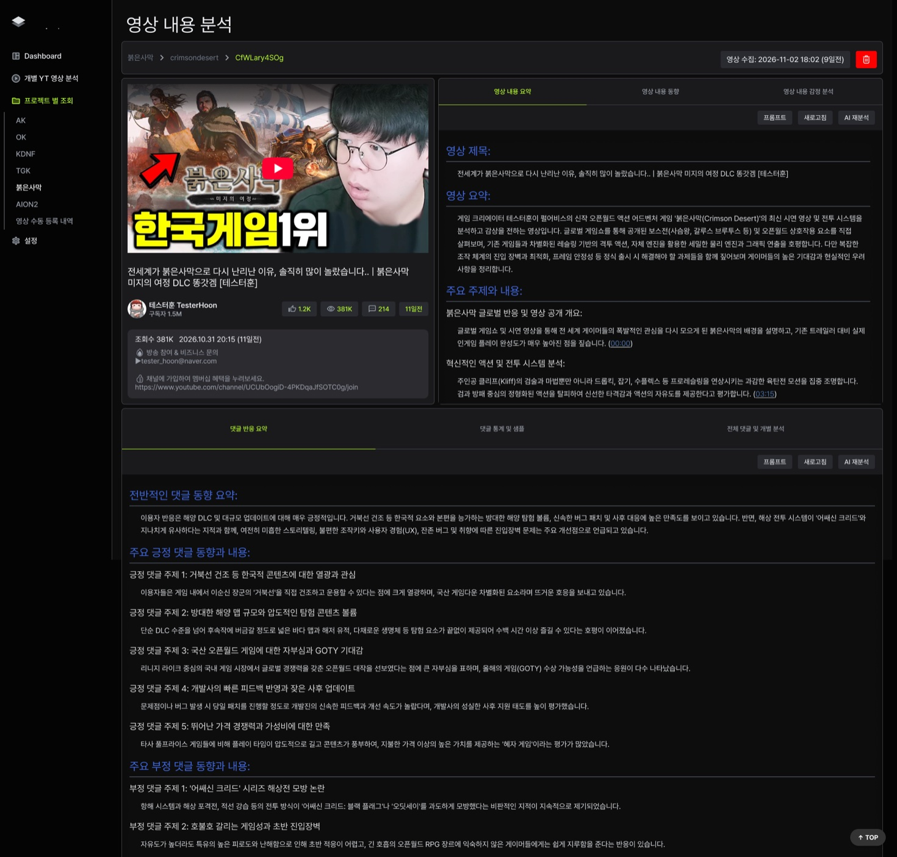

미디어 인사이트
프로젝트의 버즈를 매일 자동으로 모아
생성형 AI로 읽는 애널리틱스
미디어 인사이트는 NEOPLE 주요 프로젝트를 다룬 YouTube 영상·채널 정보를 키워드 기반으로 자동 수집하고,
조회수·댓글 같은 버즈 데이터를 프로젝트 단위로 통합해 보여주는 대시보드형 애널리틱스 서비스입니다.
수집된 영상과 댓글은 생성형 AI가 요약·주제·감정까지 정리해, 운영자가 영상을 다 보지 않아도
어떤 콘텐츠가 만들어지고 파급력이 어느 정도인지 한눈에 파악할 수 있습니다.
내가 사용자라면 어떤 화면이 편할까
기존 YouTube 영상 집계 대시보드를 참고하고, 사용자 입장에서 어떤 방향이 편리할지 고민하며 세 가지 기준을 세웠습니다.
"내가 사용자라면"이라는 1인칭 관점으로 시작했습니다.
무엇을 먼저 보고 싶은지, 어디서 막히는지를 기준으로 화면 순서를 정했습니다.
기존 YouTube 영상 집계 대시보드를 참고했습니다.
이미 익숙한 KPI 카드 · 추이 차트 구조를 가져와 학습 비용을 줄였습니다.
그래프와 영상 썸네일이 더 잘 보이도록 다크 모드를 적용했습니다.
데이터와 콘텐츠가 배경보다 먼저 눈에 들어오게 했습니다.
Information Architecture
Dashboard에서 전체 현황을 보고, 프로젝트별 조회에서 키워드 단위로 좁혀 들어가며, 개별 영상 분석에서 AI 요약과 댓글 반응까지 확인하는 흐름으로 정보 구조를 설계했습니다.
데이터 수집의 기준이 되는 프로젝트·키워드는 설정에서 관리하며, 등록된 키워드는 매일 자동 수집됩니다.

실제 서비스 구조를 기반으로 작성했으며, 프로젝트명은 서비스 내 표기를 따랐습니다.
게임별 버즈를 KPI · 추이 · TOP 콘텐츠로 묶어
지금 어디에 관심이 쏠리는지 한눈에
WHY · UX RATIONALE
운영자가 매일 처음 여는 화면은 "오늘 무엇이 달라졌나"에 바로 답해야 합니다. 그래서 KPI → 추이 → TOP 콘텐츠 순으로 배치했습니다. 결과를 보고, 원인을 보고, 근거를 확인하는 질문 순서와 시선 흐름이 같아집니다.
프로젝트 필터는 숨기지 않고 상단에 체크박스로 펼쳐 두었습니다. 이 화면의 핵심 과업은 비교이고, 비교 대상을 바꾸는 데 한 번의 클릭이면 충분해야 했습니다.
어두운 배경에 라임 포인트를 쓴 이유도 분명합니다. 라인이 많은 추이 차트에서 색 구분이 또렷해야 했기 때문입니다.

프로젝트 안을 키워드 탭으로 쪼개
원하는 콘텐츠 흐름만 골라 추적
WHY · UX RATIONALE
운영자의 머릿속 구조는 "게임(프로젝트) → 키워드"입니다. 기존 엑셀 시트가 그 구조였습니다. 그래서 좌측 내비게이션은 프로젝트, 상단 탭은 키워드로 똑같이 옮겼습니다. 새 도구지만 새로 배울 것은 없게 하는 것이 목표였습니다.
TOP 10은 표가 아니라 썸네일 카드로 두었습니다. 운영자는 영상을 제목이 아니라 썸네일로 기억합니다. "그 영상"을 찾는 시간이 눈에 띄게 줄어듭니다.
기간 선택은 우측 상단에 고정했습니다. 어떤 탭에서도 같은 자리에서 범위를 바꿀 수 있습니다.

주소 한 줄이면 영상 정보 수집부터
AI 요약까지, 보지 않아도 아는 내용
WHY · UX RATIONALE
입력 필드는 하나뿐입니다. 주소든 ID든 구분 없이 받습니다. "뭘 넣어야 하지"라는 판단을 입력 전에 하지 않게 하려는 의도입니다. 예시와 팁 블록은 빈 화면이 막막하지 않도록 첫 사용을 안내합니다.
남은 할당량은 입력창 바로 위에 보입니다. 생성형 AI 호출이 비용이라는 사실을 자연스럽게 인지하고, 꼭 필요한 영상만 돌리게 됩니다.
조회 결과는 자동으로 저장됩니다. "다시 못 찾으면 어쩌지"라는 불안이 사라지면, 일단 돌려보는 행동이 가벼워집니다.

수백 개 댓글을 AI가 세 단계로 압축
열광과 비판이 어디서 갈리는지 바로 파악
WHY · UX RATIONALE
수백 개 댓글을 한 번에 펼치면 아무도 읽지 않습니다. 그래서 반응 요약 → 통계 및 샘플 → 개별 분석 세 탭으로 나눴습니다. 전체 방향을 먼저 보고, 필요할 때만 깊이 들어가는 점진적 공개 구조입니다.
영상 정보는 좌측, 분석 결과는 우측에 나란히 둡니다. "어떤 영상의 반응인지"라는 맥락을 잃지 않기 위해서입니다. 긍정과 부정은 색으로 먼저 구분되어 스크롤 없이도 여론의 기울기가 보입니다.
탭마다 프롬프트 수정과 재분석 버튼을 두었습니다. AI 결과를 그대로 믿지 않아도 됩니다. 해석의 통제권은 사용자에게 있습니다.



BlackRGB 11/11/11 Hex 0B0B0B
LimeRGB 186/255/48 Hex BAFF30
Dark GrayRGB 28/28/30 Hex 1C1C1E
WhiteRGB 255/255/255 Hex FFFFFF
Pretendard
Aa123
Media Insight,
Collect Widely
Analyze Deeply
See Clearly
ABCDEFGHIJKLMNOPQ
RSTUVWXYZ
abcdefghijklmnopqrst
uvwxyz / 1234567890.:?!
@*&%?